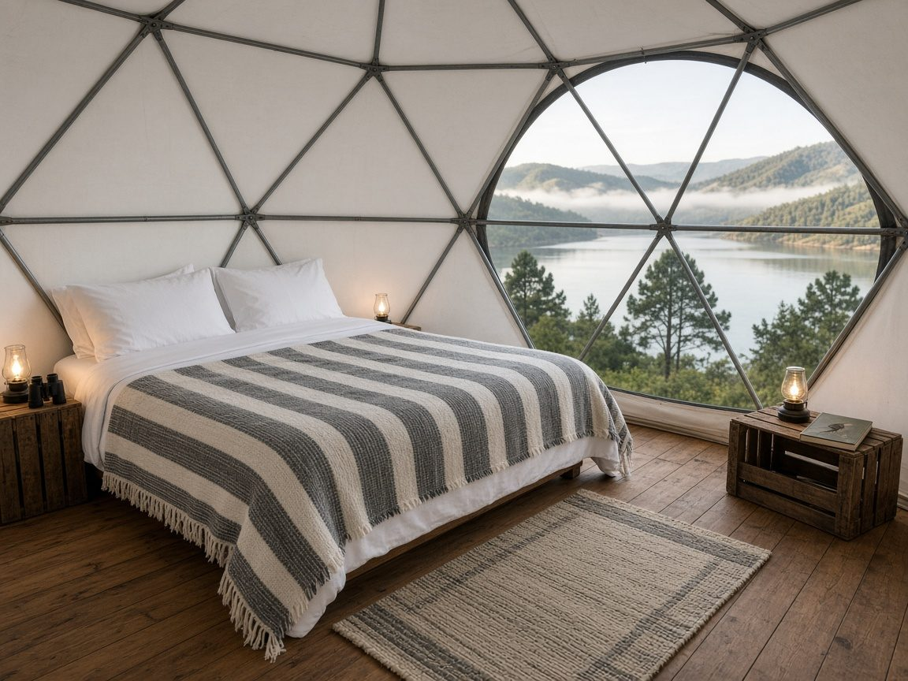
Domo Copetón2 personas
Adentro
- Cama queen, cobijas y ruanas de lana
- Vista de 180° al embalse y al cielo
- Luz y carga de celulares con energía solar
- Binoculares y guía de aves
Un domo burbuja sobre una plataforma de madera con deck, frente al Embalse del Sisga y a unas 1,4 horas de Bogotá. Baño privado, energía solar, desayuno sencillo y el silencio del altiplano.
Mirasisga es un glamping pequeño y tranquilo en la ladera del Embalse del Sisga. Abrimos con un solo domo, el Copetón, para que la experiencia sea íntima: sin vecinos de pared, sin ruido, con el agua y las aves como paisaje.
Cada domo lleva el nombre de un ave del altiplano y trae binoculares y una guía de aves en la mesa de noche.
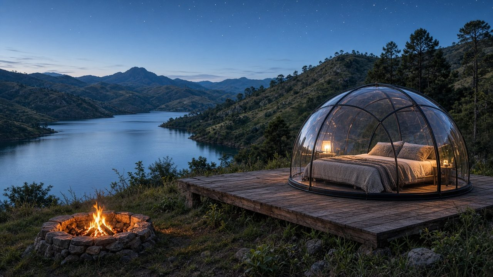
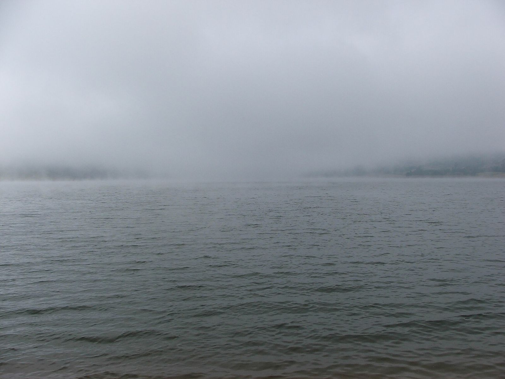
Un domo transparente con estructura metálica, montado sobre una plataforma de madera inmunizada elevada del suelo, con un deck de 6 × 2 m para el café de la mañana y el atardecer. Para 2 personas.

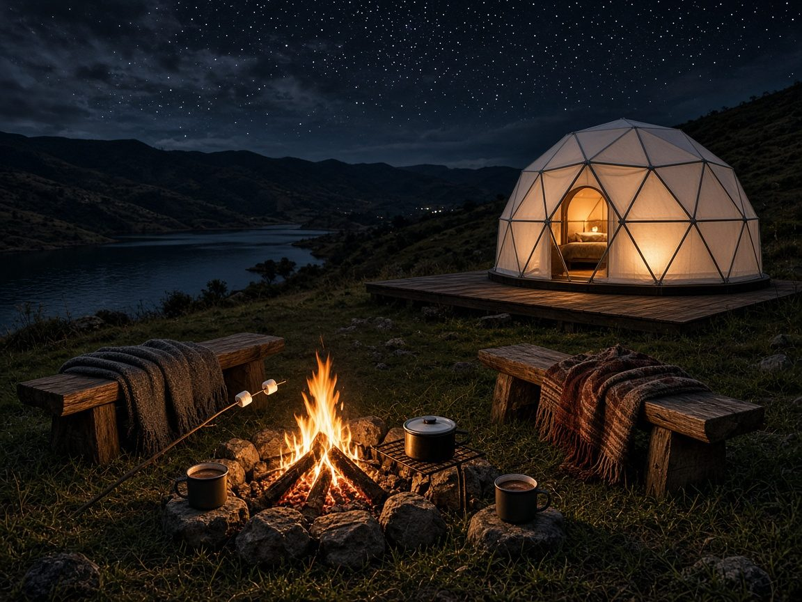
Empezamos con 1 domo. Pronto, más domos con nombres de aves.
Antes de las 8 a. m. es la mejor hora. Binoculares, guía de campo y café en el deck.
El sol cae sobre el agua y el domo se tiñe de naranja. Lleva una cobija.
Las noches del altiplano son frías y despejadas. Leña lista en el fogatero.
Desayuno incluido. Opcional: cena sencilla, vino o kit de malvaviscos (consultar).
Senderos cortos y miradores sobre el embalse. Mejor en la mañana.
Sin televisor y con mucho silencio. Hay señal móvil para lo necesario.
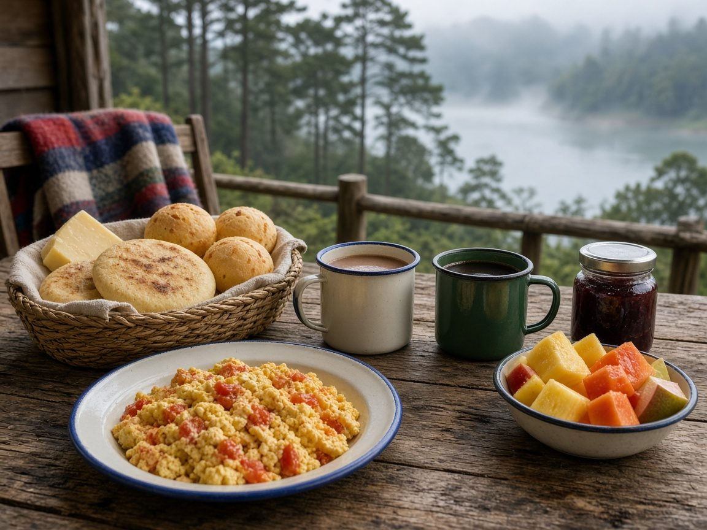
desde el norte de Bogotá (unos 55 km), según el tráfico.
2.650 m s. n. m. Temperatura entre 6 °C y 18 °C: trae ropa por capas. La ubicación exacta se envía al confirmar la reserva.
Incluye: domo burbuja para 2, baño privado con ducha caliente, desayuno sencillo, leña para la fogata, binoculares y parqueadero.
Precios en pesos colombianos, IVA incluido. Tarifas de lanzamiento; pueden cambiar.
Consultar disponibilidadFotos reales del embalse con licencia libre (Wikimedia Commons) y renders ilustrativos de cómo se verá el domo.
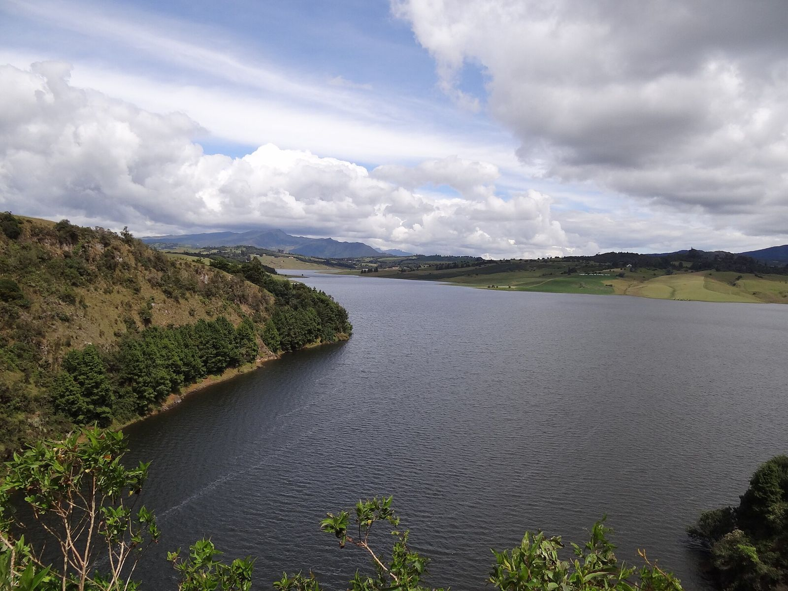
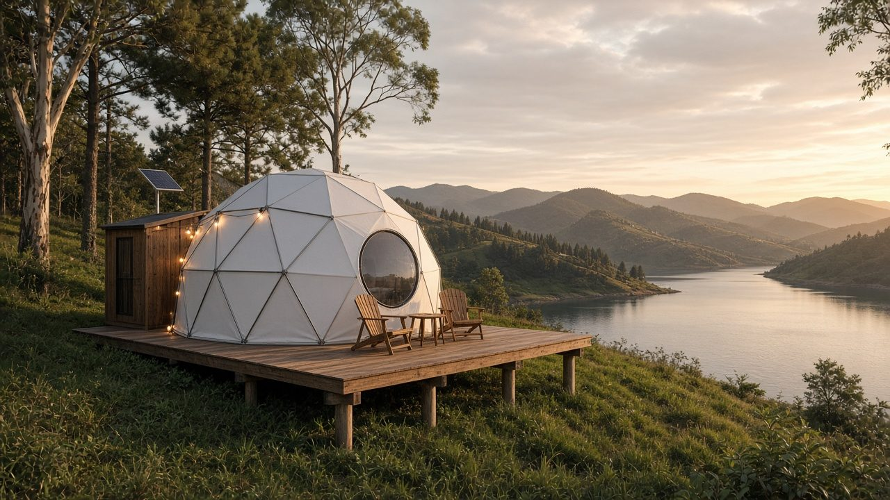
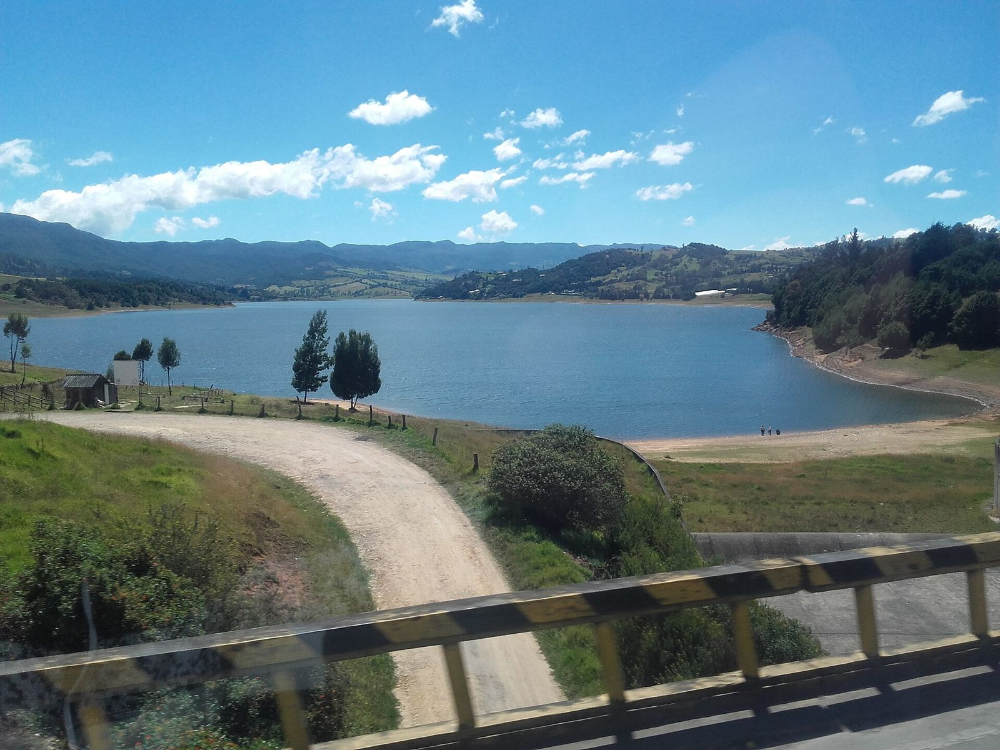
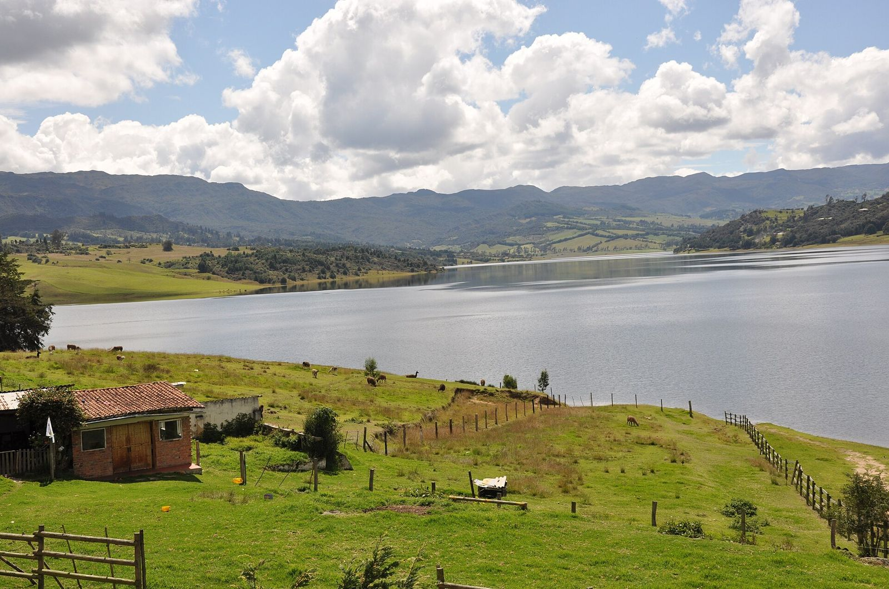
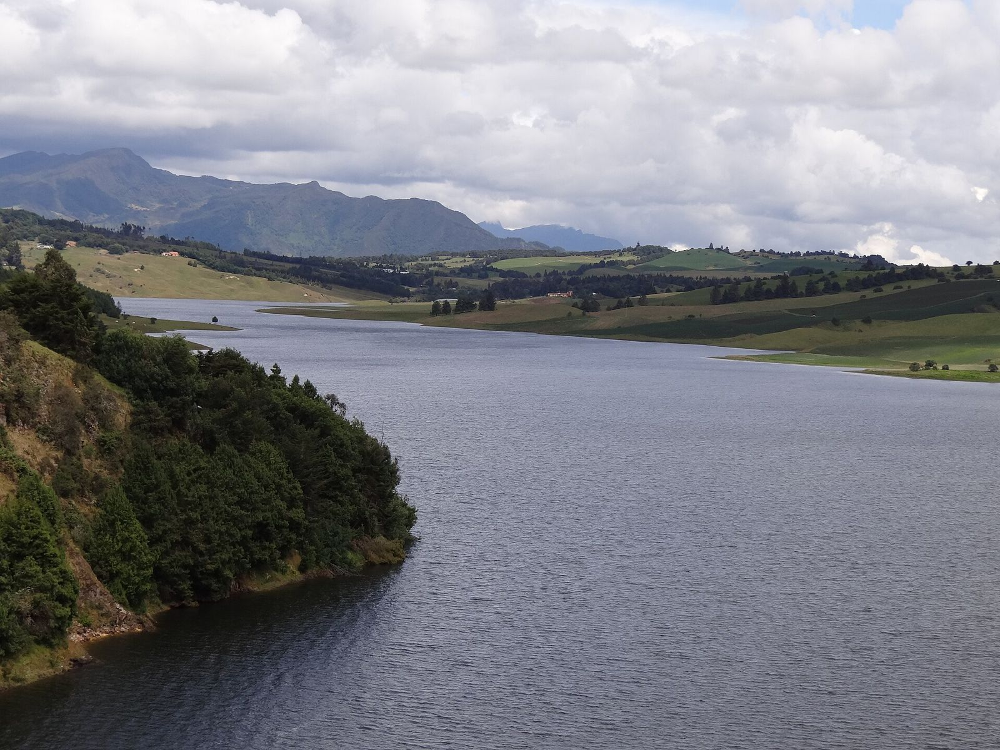
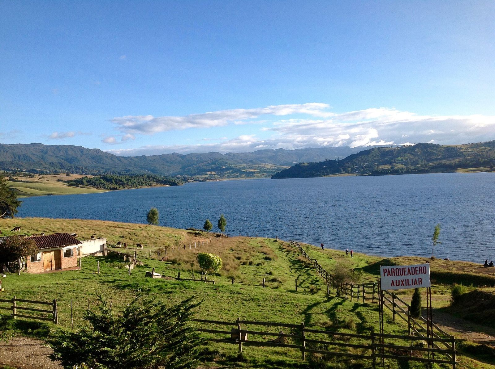
Escríbenos: te confirmamos disponibilidad y te enviamos la ubicación exacta.
Escribir por WhatsApp